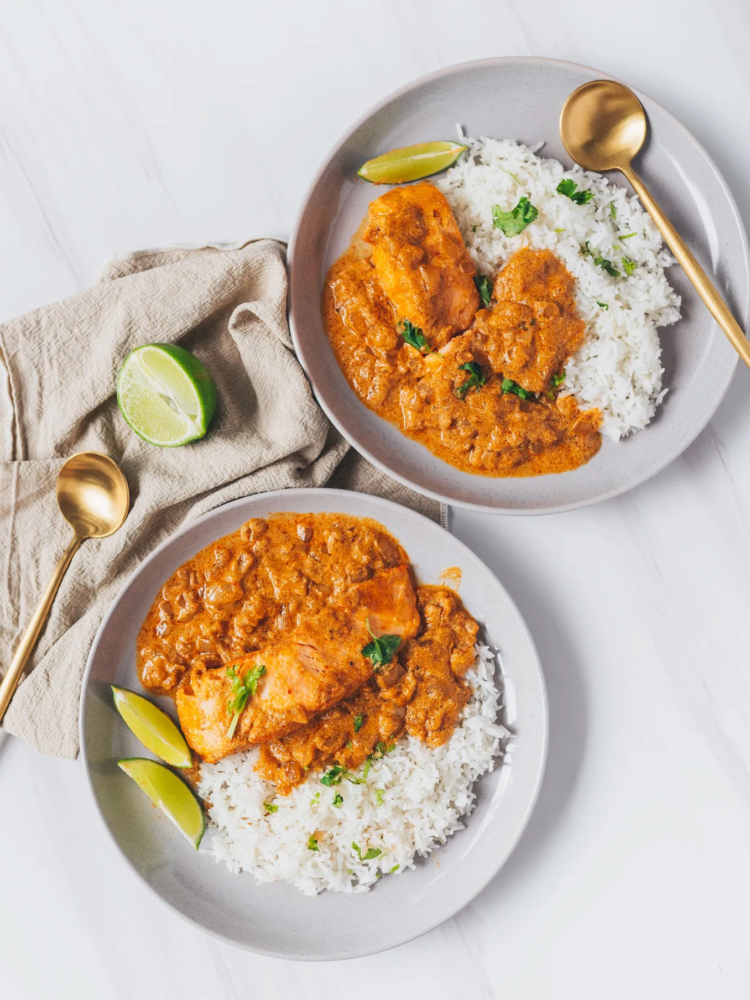

A delicious and refreshing homemade raspberry yogurt ice cream recipe. Made with just a few simple ingredients, this creamy treat is perfect for summer!
Ingredients:
- 400g skinless salmon
- 1 onion
- 3 cloves garlic
- 2 tbsp red curry paste
- 400ml coconut milk
- Salt, to taste
- Pepper, to taste
- Lime wedges, to serve
- Cilantro, for garnish
Instructions:
- Mince garlic and chop onion.
- Heat up a nonstick skillet over medium heat. Place salmon fillets in the skillet and season generously with salt and pepper. Cook for 4-5 minutes on each side or until golden brown. Remove from skillet and set aside. Leave about 1 tsp of the rendered salmon oil in the skillet and discard the rest.
- Add garlic and onion and cook over medium heat for 5 minutes.
- Add red curry paste and cook for 3 minutes, stirring constantly.
- Reduce the heat to low and add coconut milk. Let mixture come to a simmer, then add salmon fillets back to skillet.
- Cover and let simmer gently for 10 minutes or until salmon is cooked to your liking.
- Garnish with cilantro and serve with lime wedges. Enjoy!